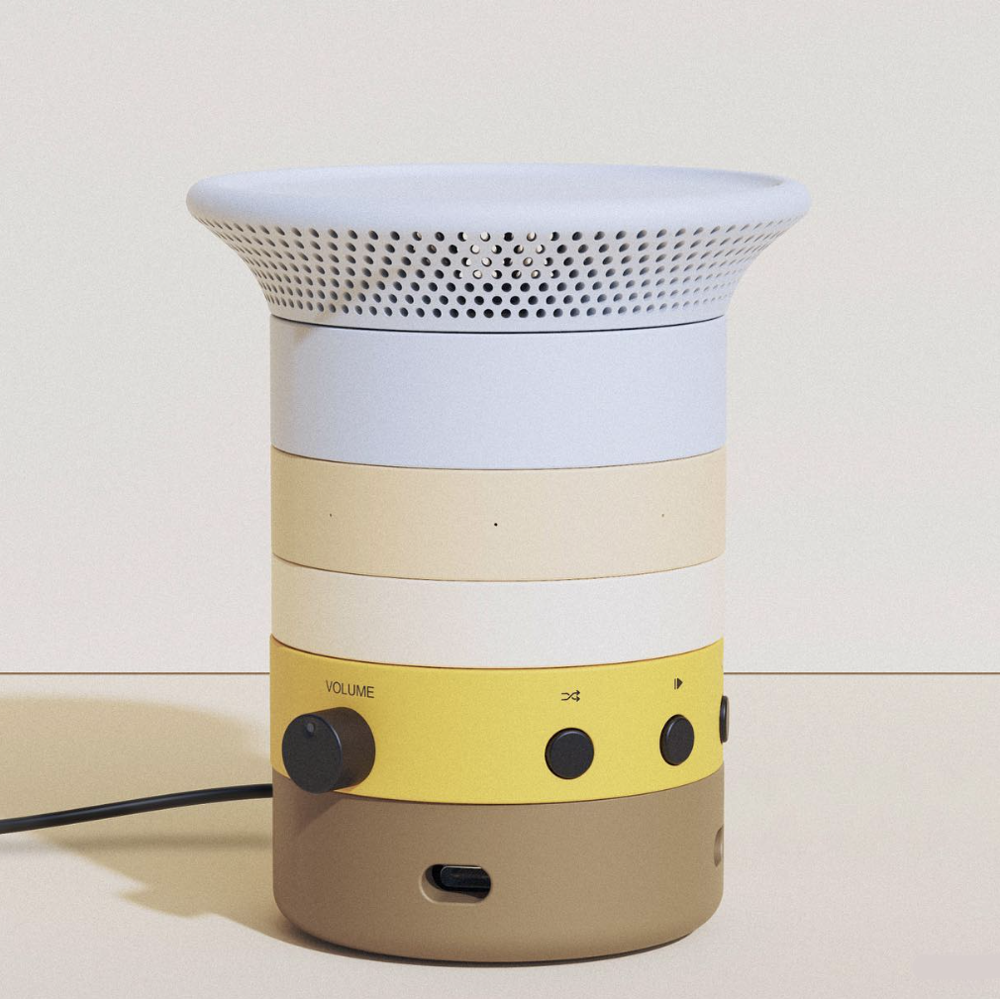
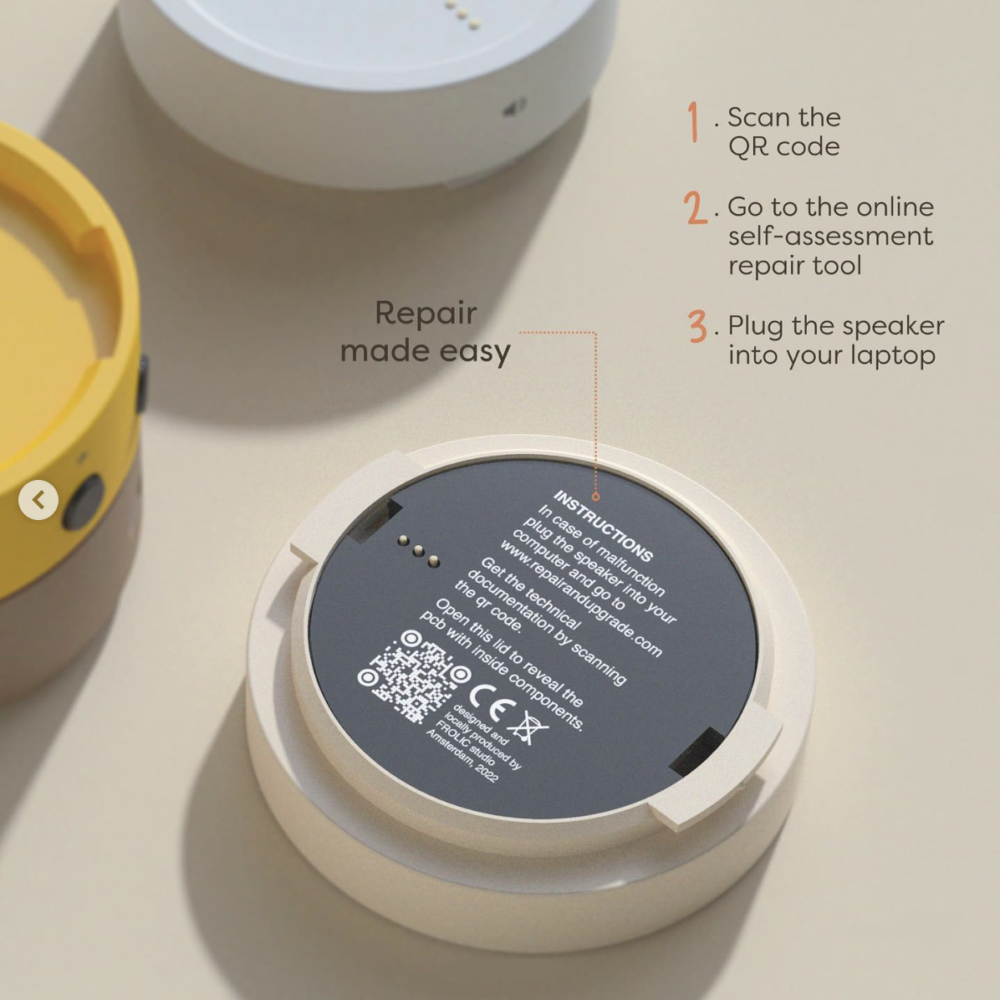
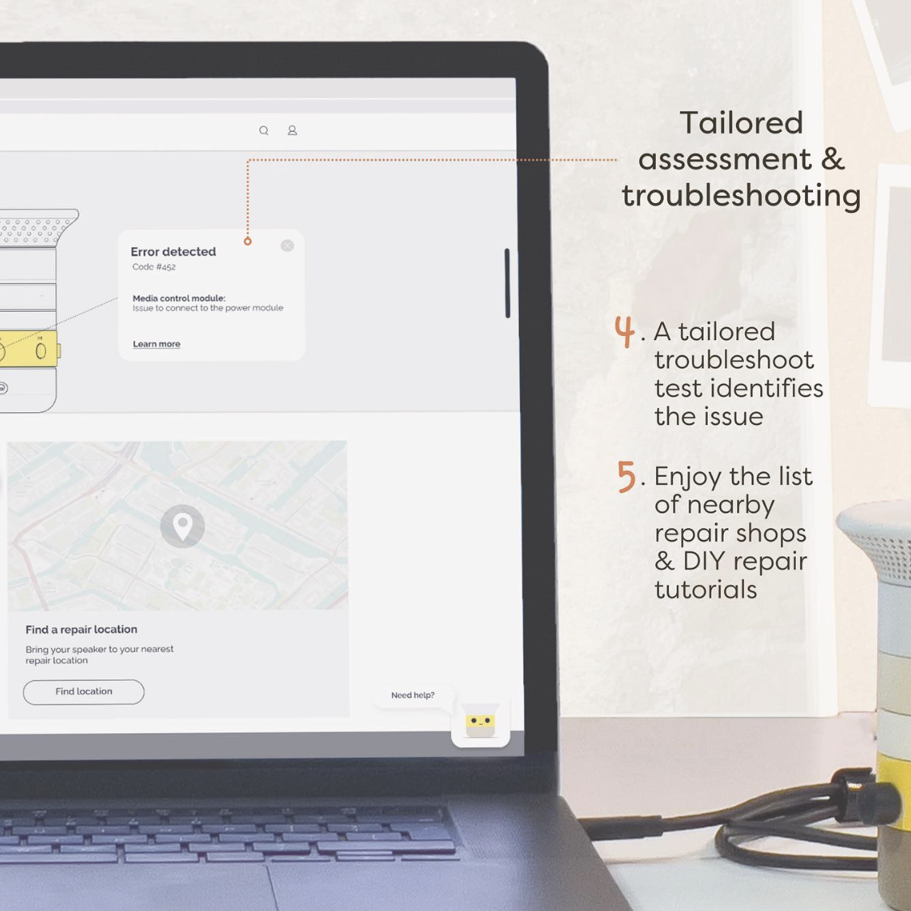

Modularity at the core
The customizable smart-home speaker that evolves and adapts to your changing needs
Built for repair and upgrades, this speaker uses interchangeable modules so you can swap, expand, and personalize key parts over time instead of replacing the whole device. The result is a longer-lasting product with lower waste and greater everyday flexibility.


